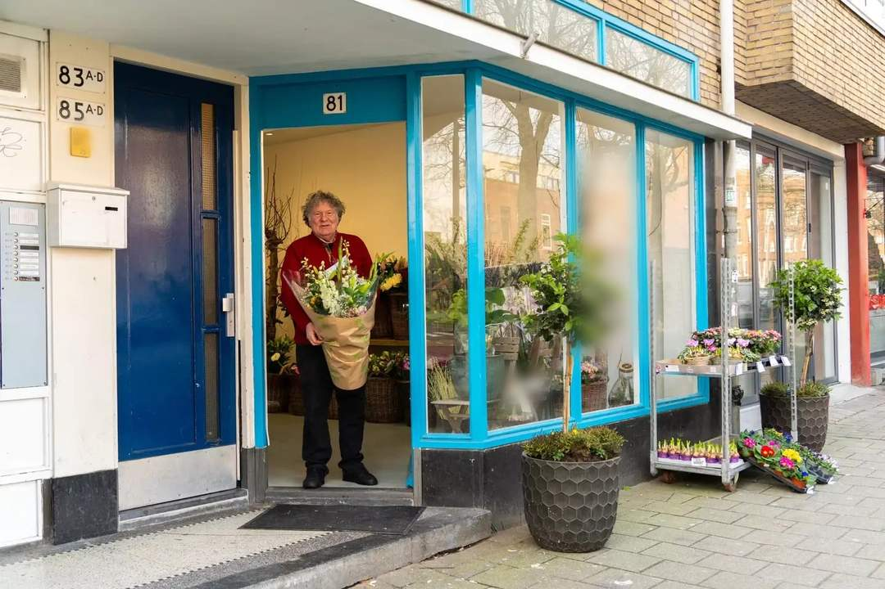
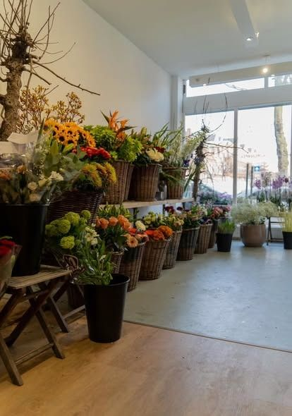
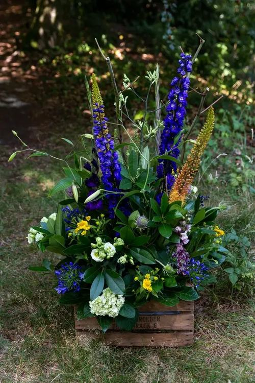
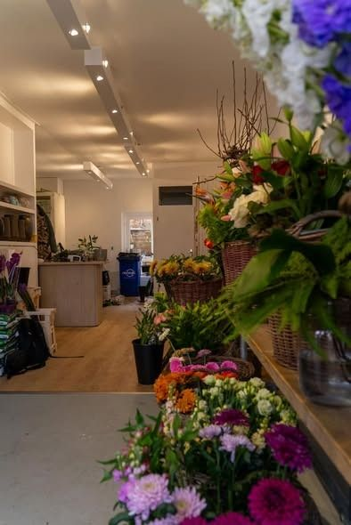
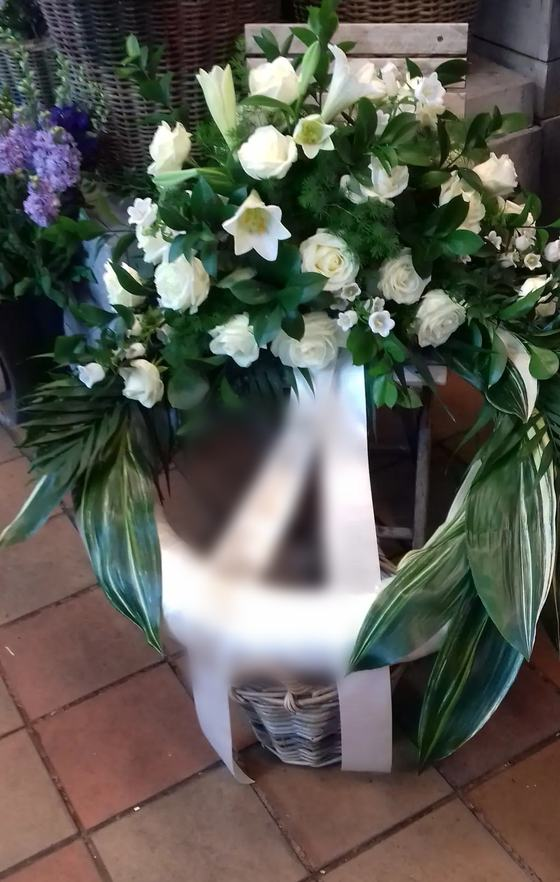
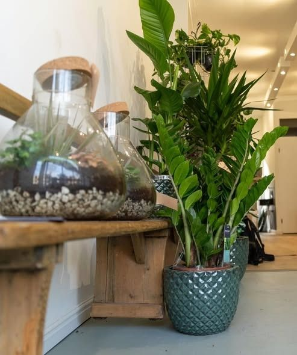

Bloemist in Rotterdam-Zuid
Boeketten en rouwwerk uit Charlois
Al sinds 1982 een bloemist in Rotterdam-Zuid. Stel je boeket samen en bel de winkel, of kom langs.

Uit de winkel
Bloemen, planten en stukken
Een kijkje in de winkel en werk van Cyro. Veeg opzij voor meer.





Alle foto's komen van de Facebook-pagina van Cyro Bloemsierkunst: de winkel (februari 2025), het stuk in de kist (oktober 2019) en de herdenkingskrans (mei 2021).
Je boeket op een kaartje
Stel je boeket samen
Tik aan wat je zoekt. Je krijgt een kaartje met je wensen; bel de winkel en lees het voor, dan weet de bloemist meteen wat je bedoelt.
1 · Wat zoek je?
2 · Welke kleuren?
3 · Voor wanneer?
Waarom Cyro
Wat klanten opvalt
Boeketten met eigen smaak
Klanten schrijven dat je deze boeketten nergens anders ziet, gemaakt door een vakman met smaak.
Vriendelijk, zonder drukte
Klanten schrijven over een heel vriendelijke eigenaar, zonder opdringerige verkoop.
Klanten blijven komen
Een klant schrijft hier al 38 jaar te komen. De zaak bestaat sinds 1982.
Uit de Google-reviews
Bloemen waar mensen over vertellen
De beste bloemenwinkel van Charlois, met een heel vriendelijke en vakkundige eigenaar.
Samu
Echt prachtige boeketten, die je nergens anders tegenkomt.
Puck
Een fijne winkel, en goed geholpen bij het kiezen van een online bestelling.
Dora
Samengevat uit reviews op Google, niet letterlijk geciteerd. Alle reviews op Google bekijken
De winkel antwoordt zelf op bijna elke review, bijvoorbeeld: Bedankt voor je leuke reactie
en Ben blij met je spontane reactie
.
Van de kiezer naar de toonbank
Van wens naar boeket
Kies wat je zoekt
Boeket, rouwwerk of bedrijfsboeket, met de kleuren die je mooi vindt.
Bel de winkel
Lees je kaartje voor op 010 481 38 03, of kom langs aan de Wolphaertsbocht 81.
De bloemist maakt het
Aan de telefoon of in de winkel spreek je de rest af.
Over je bloemen
Voor je belt
Kan ik rouwwerk laten maken?
Ja, klanten noemen rouwboeketten in hun reviews. Bel de winkel om je wensen door te geven.
Maken jullie ook bedrijfsboeketten?
Bedrijfsboeketten worden in de reviews genoemd. Bel even, dan hoor je wat er kan.
Wat kost een boeket?
Dat hangt af van je wensen. Bel 010 481 38 03, dan hoor je het meteen.
Wanneer kan ik langskomen?
Bel even of kom langs aan de Wolphaertsbocht 81.
Adres en route
De winkel aan de Wolphaertsbocht
Bloemen voor iemand die je wilt verrassen?
Stel je boeket samen of bel de winkel in Charlois.